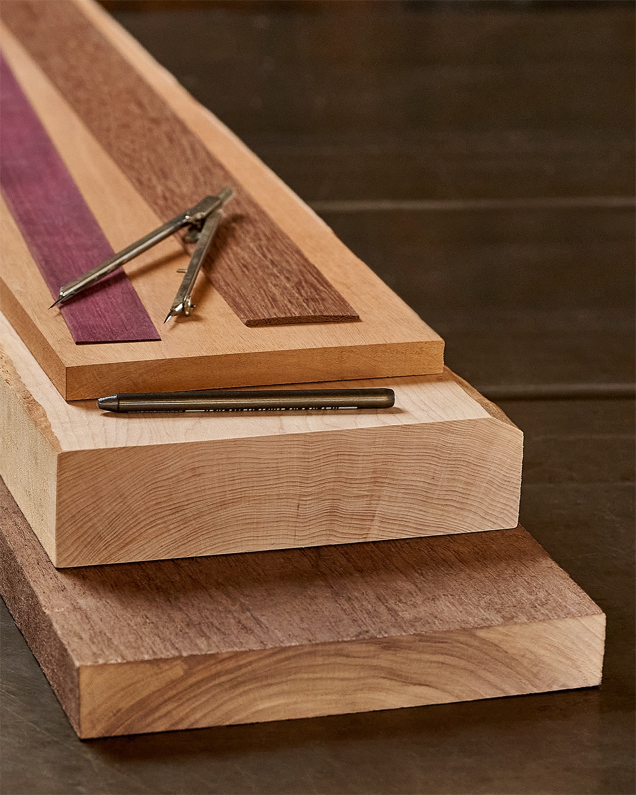
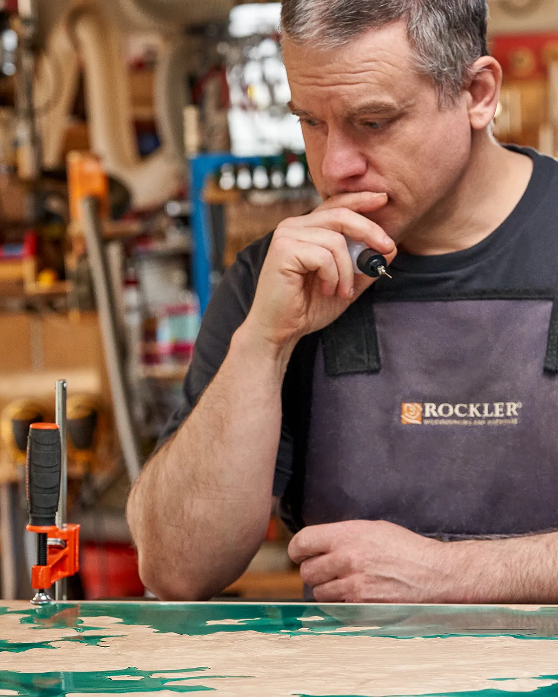
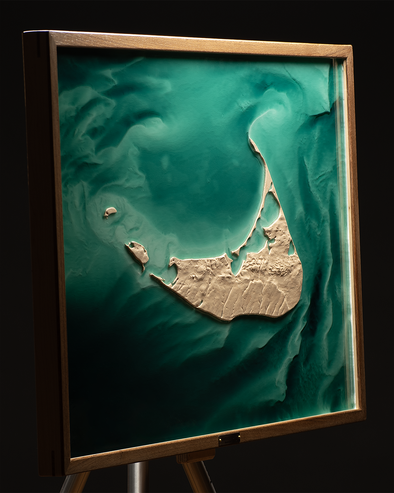

From Geography to Art
The process starts with a conversation about place and meaning.
From terrain data to finished work: precision carving and hand finishing, guided by your vision or artistic direction.

Discovery
Begin With Place
- 30–45 minute private consultation
- Scale, materials, and placement guidance
- Initial feasibility + next steps
Every commission starts with a conversation about place and personal meaning. Dimensions, timing, and practical needs are part of that discussion—but the center of the call is what the place holds, why it matters, and how the finished work should carry that story.
During the initial consultation, the focus is on listening closely. Understanding your connection to place shapes how we approach the work, from which geographic features to emphasize to materials that suit the terrain’s character. This conversation guides creative direction without dictating it.
We discuss wood species, scale, and the process of rendering terrain as sculptural relief. By the end of the call, what’s possible is clear, and the next steps are defined.
Design & Direction
Finding the Right Approach
- Interactive 3D terrain viewer for exploration
- Material and finish options presented
- Detailed timeline and investment breakdown
- Design refined through key checkpoints (collaborative or artist-led)
Within 2–3 days, you receive private access to an interactive 3D viewer showing your terrain model. Rotate it fully, manipulate the view, and evaluate how topographic contrast translates into relief. It displays geographic scope, vertical exaggeration, orientation, and scale, providing a complete foundation for design decisions.
From there, key checkpoints guide the work. Scale, framing proportion, overlays, and finish direction are tested and confirmed before fabrication begins. Always the same goal: a piece that feels inevitable, not forced.
Data Crafting
Science Becomes Art
- Curated terrain data sourcing + preparation
- Relief modeling + fabrication optimization
- Hand-selected hardwood (client-provided material welcome)
- Toolpath strategy + carving preparation
Once the core direction is set and your build window is reserved, the technical work begins. High-resolution elevation data is sourced from USGS, NOAA, and other international datasets, often combining multiple sources to achieve the best possible detail. The goal is always the most faithful surface the data can support: clean, detailed, and sculptural at the chosen scale.
That raw data is processed, cleaned, and translated into toolpaths for precision carving. Vertical exaggeration is tuned so key features read clearly at scale, while cutting strategies are adjusted to preserve fine detail and maintain structural integrity. As the surface develops, those decisions are refined in response to what the terrain actually reveals.
In parallel, the wood is selected. Each board is hand-chosen for grain pattern, color consistency, and figure. Sustainable hardwoods are sourced from certified mills and architectural reclamation yards. Each piece carries its own history before becoming part of yours. Clients are also welcome to provide meaningful material; I’ll evaluate it for stability and suitability, then advise on the best way to incorporate it.

Fabrication
Machine Precision, Human Touch
- 12–36 hours of CNC carving
- 12–24 hours of laser etching (overlay), when applicable
- Hand sanding + finish preparation
- Resin pours (custom tone), when applicable
- Finish application + curing
- Inlay, gilding + fine detailing
- Artist-made frame (spline joinery)
- Custom-engraved nameplate + installation
The Computer Numerical Control (CNC) carving reveals the topography with sub-millimeter fidelity over multiple days (often 12–36 hours of carving time). I monitor the entire cut, adjusting strategy as needed to protect grain and preserve fine contour detail. What emerges is raw geography: accurate, but not yet finished.
As the piece moves into finishing, choices around tone, resin depth, and overlay weight are resolved against the actual surface. When needed, I test options and share results so decisions are grounded in the real work rather than abstract possibilities. Depending on the commission, these choices emerge collaboratively or through artistic judgment.
Next, where the design calls for it, the surface is laser-etched with a custom overlay (trails, tree lines, waterways) burned directly into the terrain with crisp definition. It’s an optional layer of storytelling that binds the design to the land before any finish or resin is applied.
Then the hand work begins. The surface is sanded through multiple grits, following the terrain’s natural flow. Edges are refined to suit the piece, and the finish is built in layers (stains, oils, or shellac), then sealed for depth and longevity.
Where water is part of the story, resin is poured in custom tones and applied by hand to build tonal depth. The resin cures for 7–14 days and is closely monitored for temperature stability and surface integrity. The cured resin is then wet-sanded through progressive grits and polished by hand to optical clarity.
The frame is made specifically for the piece it surrounds: proportioned, milled, and assembled with spline joinery for crisp, strong corners with no visible hardware.
When included, the process concludes with a stainless-steel nameplate, laser-etched and mounted with brass hardware. The inscription anchors the work to place and to your story. Some pieces are stronger without one.

Delivery & Beyond
Delivered, Installed, Cherished
- Professional photography and documentation
- Custom crating and packaging
- Specialist art carrier shipping
- Installation guidance provided
- Care guidance and restoration support
The finished piece is professionally photographed and signed on the back with the location details and creation date. A custom shipping crate is built to ensure safe arrival. These works ship like the art they are.
Delivery is arranged via insured carrier service with museum-standard crating. Fine-art courier logistics are available by request for large installations or time-sensitive deadlines. Local clients may arrange studio pickup, and installation consultation is available. Proper mounting is essential to support the scale of the work.
But delivery isn't the end of the relationship. Every piece includes care guidance and my direct contact. Should repair or refinishing become necessary, I'm available to assess the work. And if a companion piece would complete the story, we can explore that together.
Begin a Conversation
A private consultation clarifies place, scale, materials, and direction before work begins.
Schedule a Consultation